PRESS KIT · STEAM 2026.12.22
LOOT MULE
深く潜り、持てるだけ拾って、生きて拠点へ帰る。ターン制のダンジョン・ローグライト。潜るほど、奪うほどダンジョンに気づかれ、やがて番人が追ってくる。死ねば持ち物も装備も全部失う。行きは探索、帰りは死闘。
基本情報
| タイトル | LOOT MULE（ルートミュール） |
|---|---|
| ジャンル | ターン制ダンジョン・ローグライト |
| 開発・販売 | RustyWorks（日本・個人開発） |
| 発売日 | 2026年12月22日（火） |
| 対応機種 | PC（Windows / macOS）Steam |
| 価格 | 980円（税込）／ 6.99ドル。発売から2週間は30%オフ |
| 対応言語 | 日本語・英語ほか全12言語 |
| プレイ人数 | 1人 |
| 操作 | キーボード・マウス・ゲームパッド |
| 無料体験版 | ブラウザで遊べます（unityroom / itch.io） |
| リンク | Steam · rustyworks.jp · unityroom · itch.io |
| お問い合わせ | rustyworks.games@gmail.com · X @RustyWorksGames |
紹介
『LOOT MULE』は、「ターン制ローグライク」と「生きて持ち帰る（エクストラクション）」を合わせたダンジョン・ローグライトです。入口まで歩いて帰れば、拾った物はすべて自分の物。帰還の巻物ならすぐ帰れますが、持ち帰れるのは身に着けている物だけ。潜るほど上がる「警戒度」が追跡に達すると、倒しにくい番人が追ってきて、帰り道は死闘に変わります。毎回レベル1から、武器ごとのスキルと7本の枝のスキルツリーで組み立て、助けた動物の仲間がしんがりを守ります。どこで引き返すかを決めるのは、あなたです。
特徴
- 死ねば、全部失う。歩いて帰れば全部、巻物なら身に着けた物だけ
- 潜るほど上がる警戒度。静か → ざわめき → 警戒 → 追跡で番人が来る
- 毎回レベル1から。武器ごとのスキル、7本の枝のスキルツリー、職業4つ
- 鎖につながれた動物（犬・猫・狐）を助けると、しんがりの仲間に
- ダンジョン4つ・全42階、難易度3段階
トレーラー
スクリーンショット
2560×1440。クリックで原寸を開きます。日本語の画面と英語の画面があります。
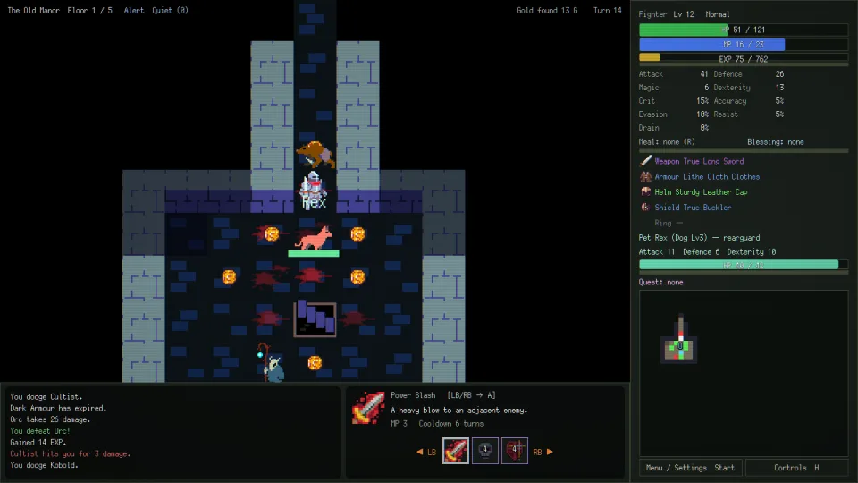
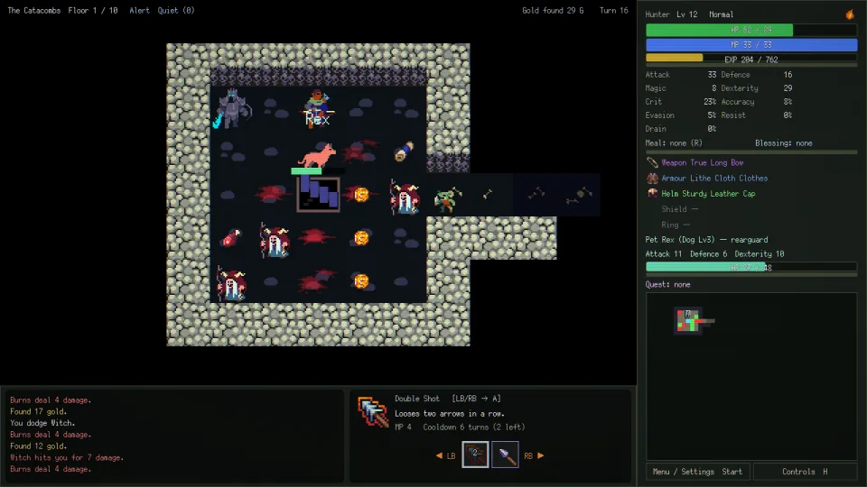
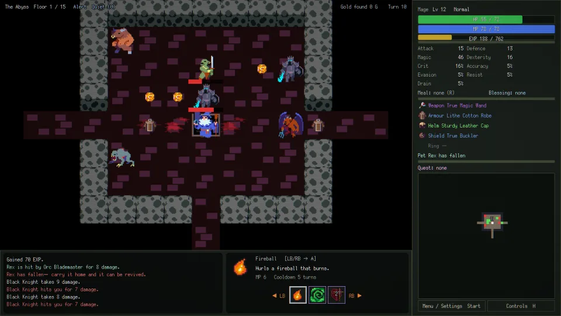
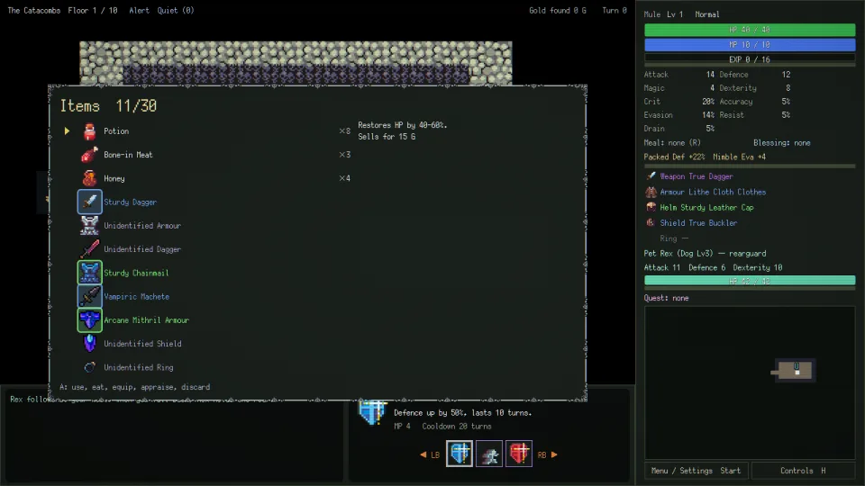
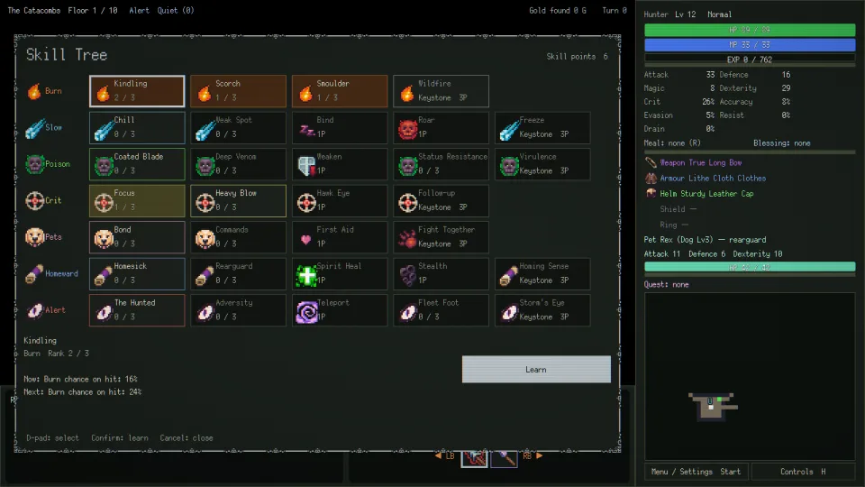
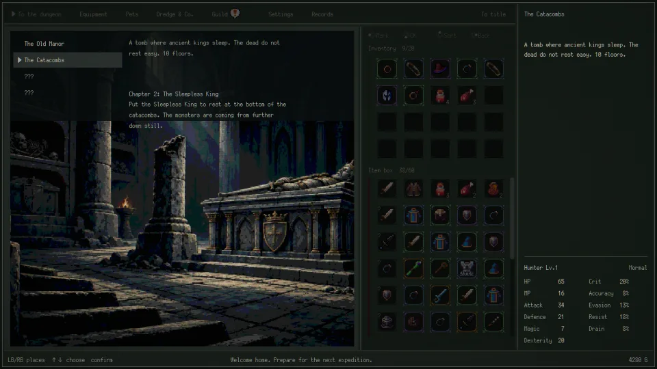
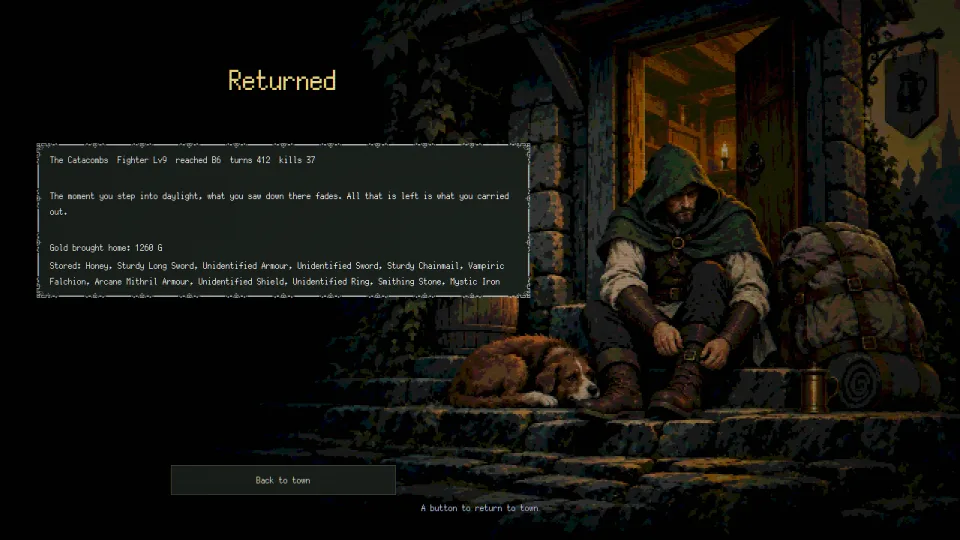
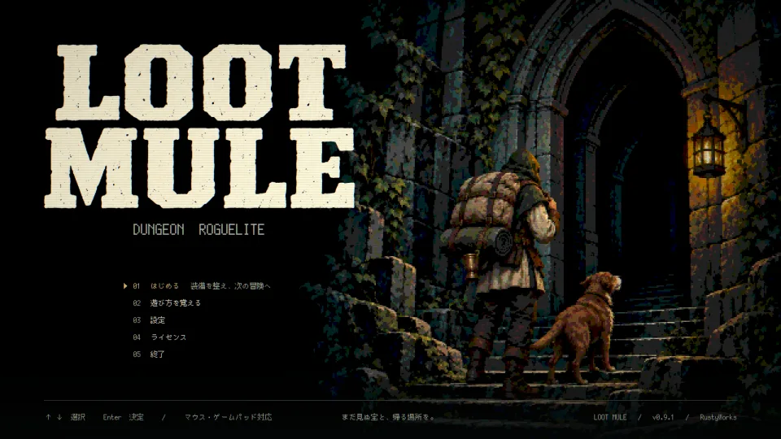
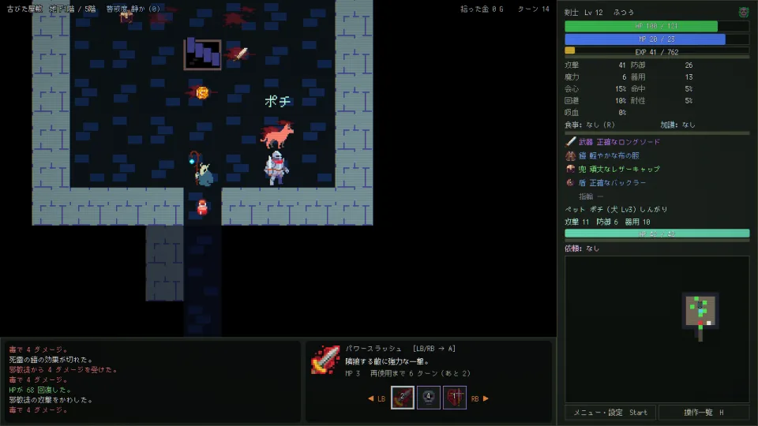
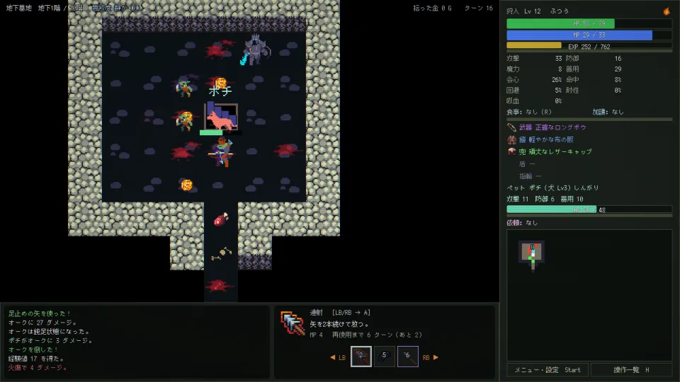
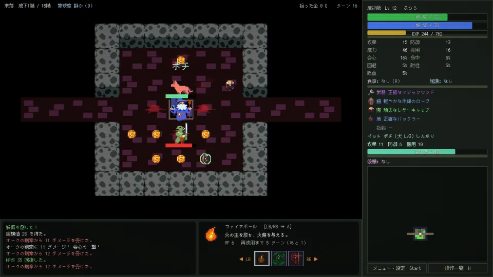
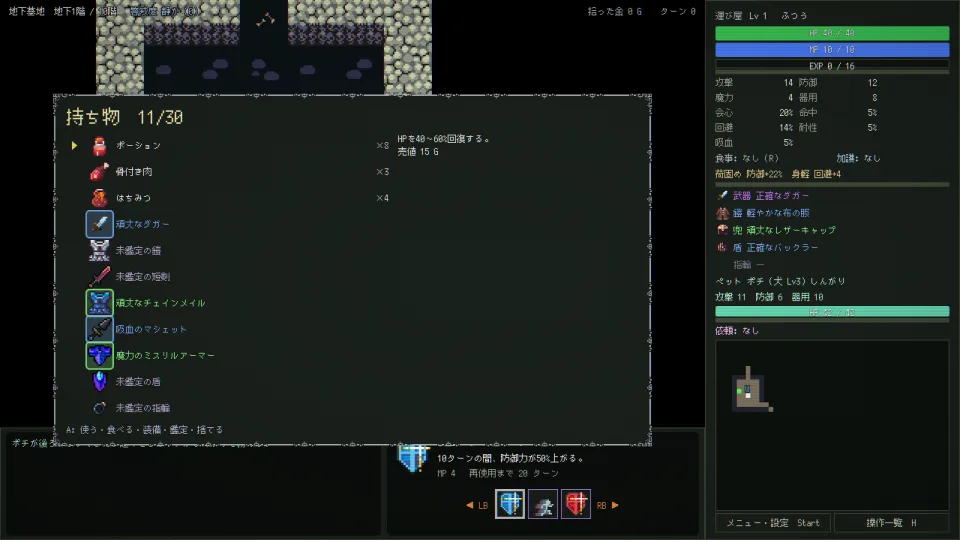
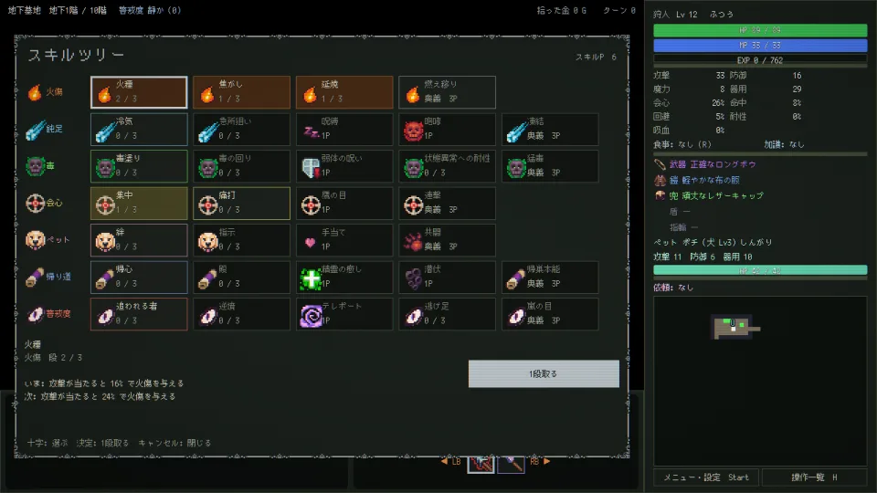
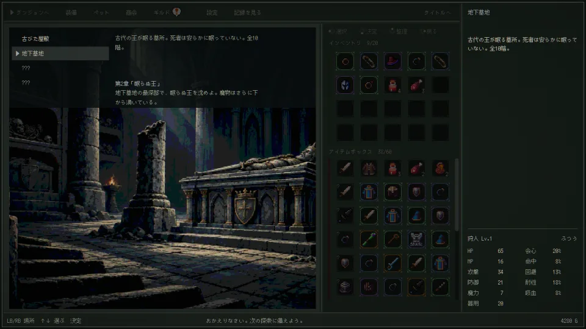
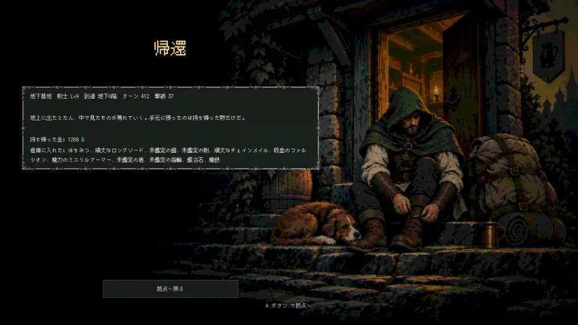
ロゴ・キーアート
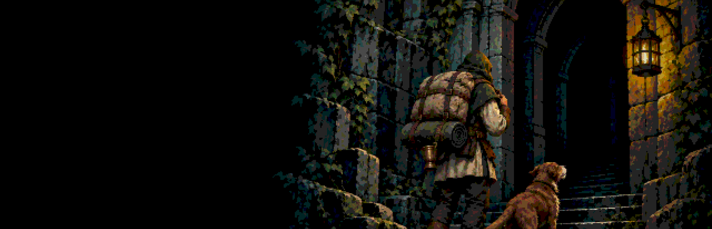
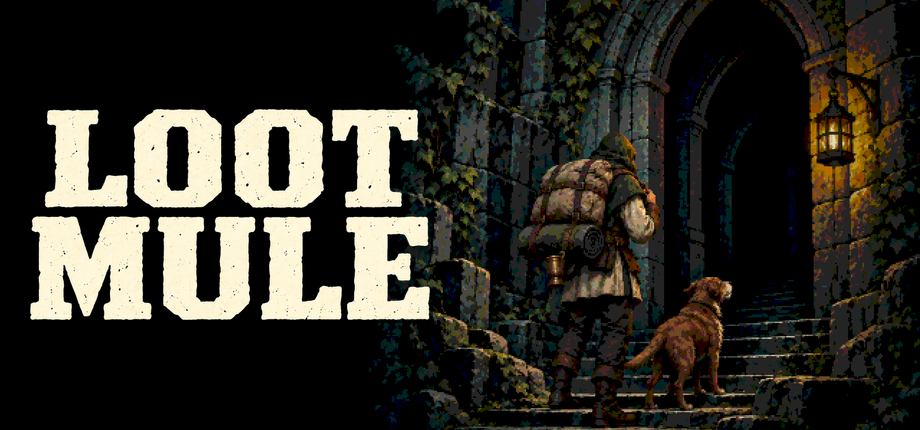
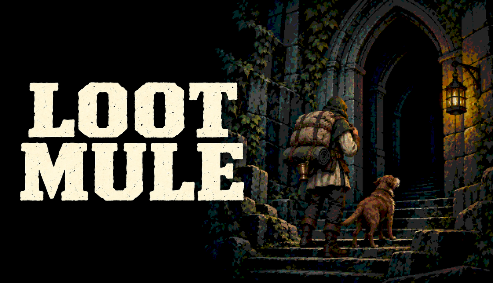
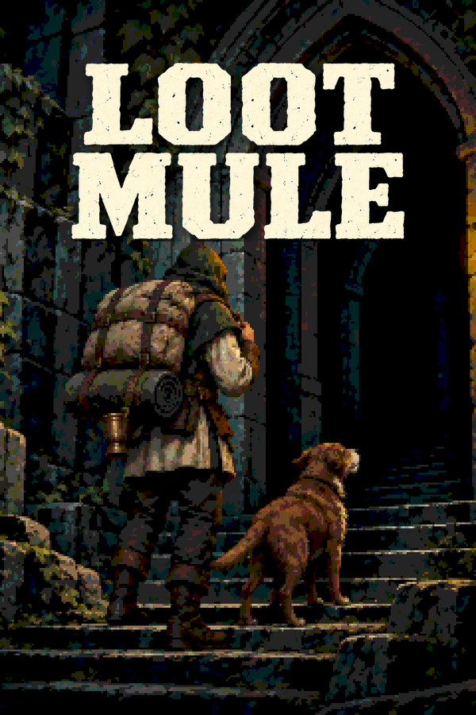
開発者
RustyWorks は日本の個人開発者です。
素材は記事・動画での紹介に自由にお使いください。レビュー用の Steam キーが必要な方は、メールでご連絡ください。